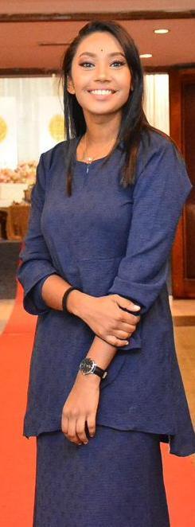

Life can sometimes feel overwhelming, uncertain or simply too heavy to carry by yourself. Counselling can offer a supportive space to understand what you are experiencing, reconnect with yourself and move forward with greater clarity.

My work in mental health is grounded in empathy, respect and the belief that every person deserves to feel heard and understood. My counselling background includes supporting adults, couples, families, children and adolescents through personal, emotional and relational concerns.
I hold a Master of Science in Counselling and have developed practical experience through supervised counselling work. I value a compassionate, confidential and person-centred environment where clients can explore their experiences without judgement.
This website is a professional profile and wellbeing resource. Professional titles, scope of practice and services should always be understood in accordance with applicable Malaysian registration and practice requirements.
Support can begin with understanding what feels difficult right now and identifying small, meaningful steps forward.
Exploring pressures, emotional overload and healthier ways to cope with demanding seasons of life.
Developing self-awareness, challenging unhelpful beliefs and building a more compassionate relationship with yourself.
Understanding patterns, needs and boundaries while strengthening healthier communication and connection.
Making sense of past experiences, discovering strengths and working toward a life that feels more aligned with you.
My training and counselling experience span several areas of personal and relational wellbeing.
Personal growth, emotional wellbeing and self-discovery.
Career clarity, decision-making and future planning.
Communication, understanding and stronger connections.
Family dynamics, communication and healthier relationships.
I believe counselling is not about telling someone how to live. It is a collaborative process that creates room for reflection, insight, emotional safety and meaningful change.
Depending on the individual and the goals of counselling, my training has included approaches and techniques drawn from person-centred practice, cognitive behavioural strategies, grounding, guided imagery, journaling, communication work and expressive activities.
Every person has a different story. The counselling process should honour that individuality rather than force everyone into the same path.
This profile is a place to learn about my counselling journey, mental-health interests and professional development.
Mental Health Counselling • Psychological Wellbeing • Mental Health Advocacy
Specialization in Mental Health
Connect with me on LinkedIn to follow my professional journey, mental-health interests and counselling-related updates.
Connect on LinkedInIf you are in immediate danger or experiencing a mental-health emergency, please contact local emergency or crisis services. This website does not provide emergency support.